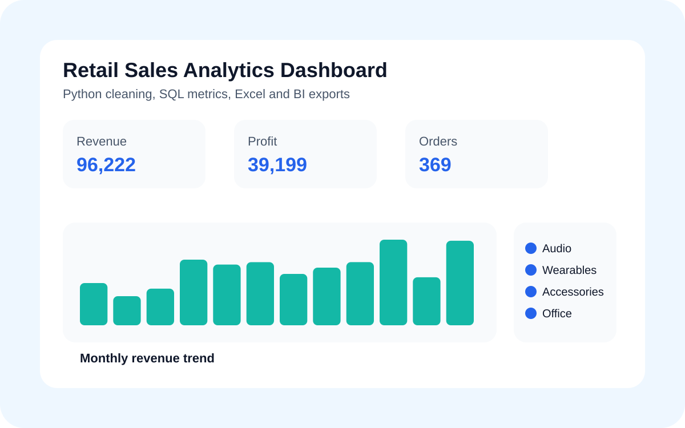
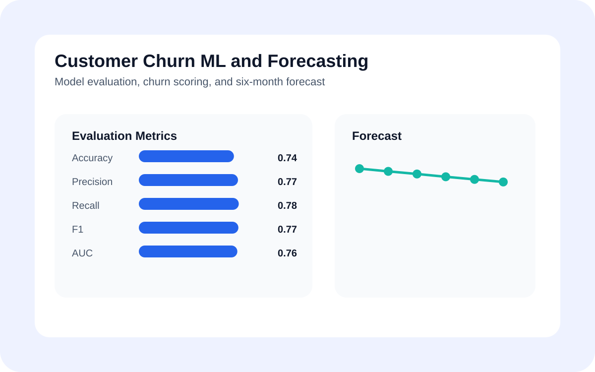
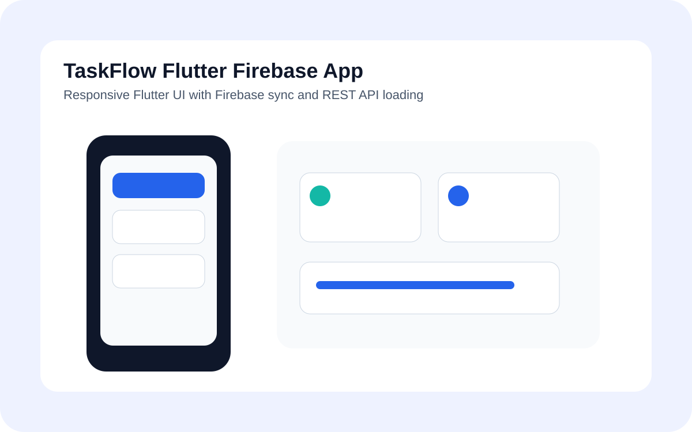
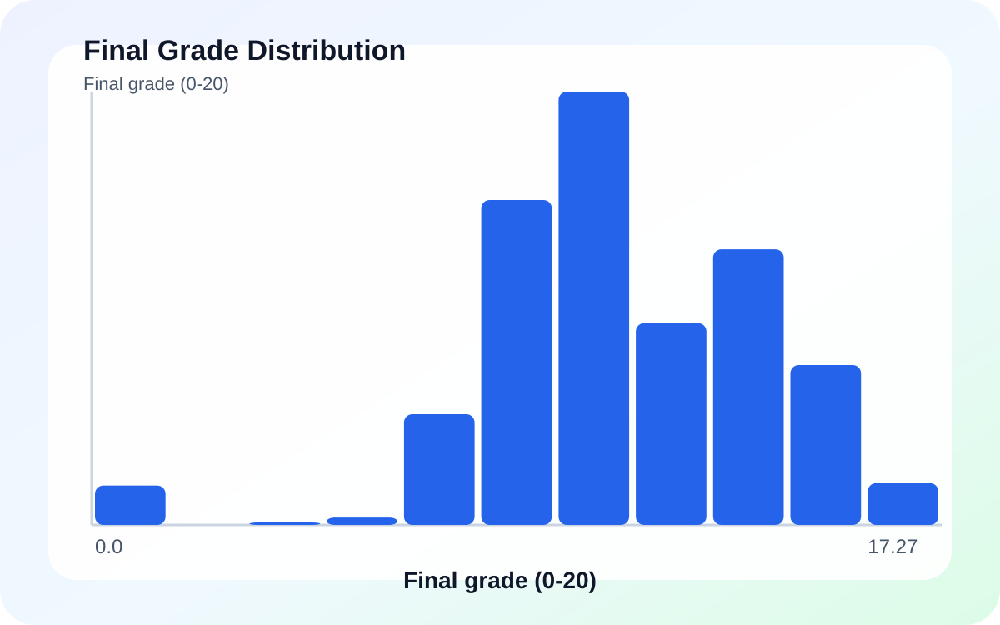
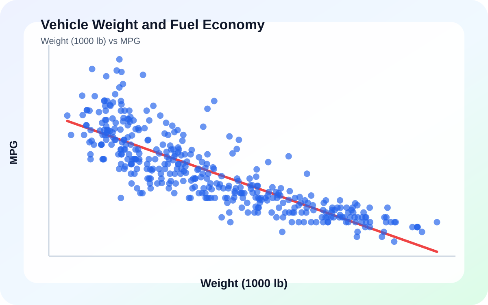
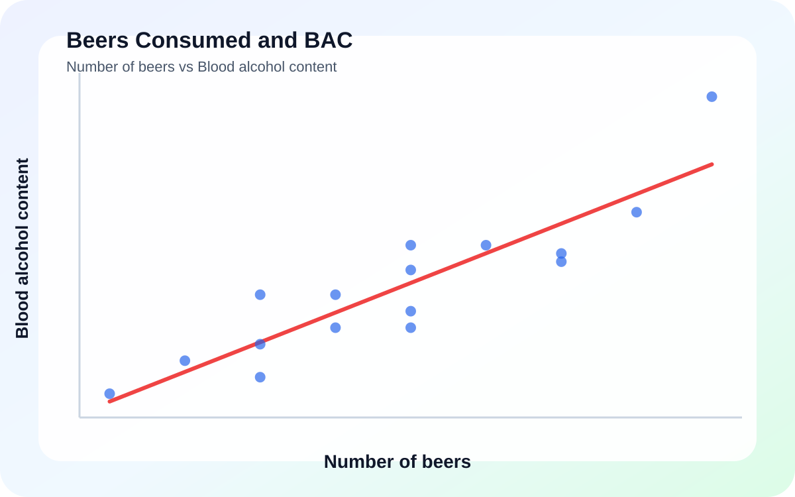
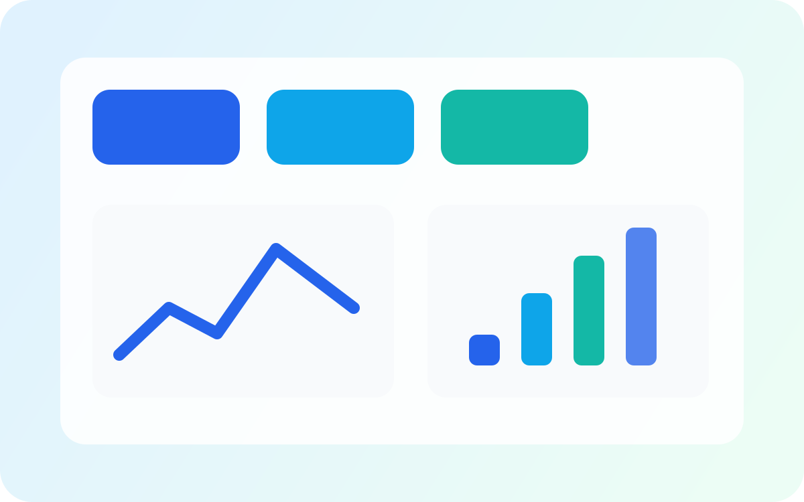
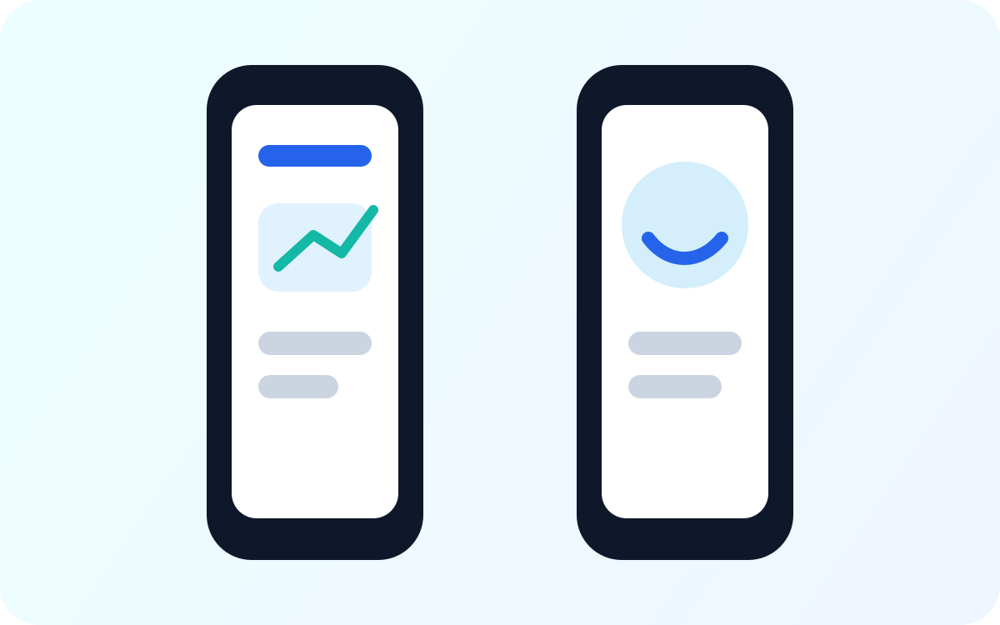

Evidence first
Every project starts with the right question, clean data, and a practical path from raw numbers to confident decisions.
Portfolio of Umar Farooq
I am a Statistician
Turning data into clear decisions and polished digital experiences across statistics, analytics, data science, and mobile development.

Modern portfolio foundation
Statistician, Data Analyst, Data Scientist, and Flutter Developer.
About
I like work that is measurable, understandable, and useful. My focus is on translating analysis into action, keeping the interface clear, and making every deliverable easy to trust.
Every project starts with the right question, clean data, and a practical path from raw numbers to confident decisions.
Structured thinking, sound assumptions, and results that can stand up to scrutiny.
Readable dashboards, concise reporting, and visuals that make patterns obvious.
Mobile interfaces that feel fast, consistent, and accessible across screen sizes.
Education
My academic path from secondary school to a BS in Statistics, with a growing focus on analysis, research, and data-driven work.
2023 - 2027
Currently pursuing a Bachelor of Science in Statistics, focused on quantitative analysis, probability, statistical modeling, and data-driven problem solving.
Completed in 2025
Completed German language training under the Government of Pakistan Prime Minister's Youth Skills Development Program at Government College Peshawar.
Completed in 2022
Completed a Diploma in Information Technology through the KPK Board of Technical and Commerce Education, building practical IT and computer application skills.
Completed in 2022
Completed intermediate education in science at Government Degree College Wadpagga, Peshawar, strengthening the academic base for statistics and analytics.
Completed in 2020
Completed secondary school in Arts from Government Shaheed Haris Nawaz High School, Zaryab Colony, Peshawar.
Certificates
A focused collection of verified learning across UX design, data science, business intelligence, dashboards, visualization, and machine learning.
Foundations of applied data science and machine learning for analyst workflows.
View CertificatePython basics for data work, analysis scripting, and practical problem solving.
Certificate link pendingRegression concepts and applied modeling for relationships, prediction, and interpretation.
Certificate link pendingClassification methods for supervised machine learning and practical analyst use cases.
Certificate link pendingData preparation, cleaning, and feature-ready workflows for machine learning projects.
Certificate link pendingProfessional certificate focused on UX research, wireframes, prototypes, and user-centered product design.
View CertificateCore data science concepts, analytical thinking, and the foundations of data-driven problem solving.
View CertificateData cleaning, preparation, quality checks, and repeatable workflows for trustworthy analysis.
View CertificateBusiness intelligence basics, reporting strategy, metrics, stakeholders, and decision support.
View CertificateDashboard planning, reporting choices, and clear visual communication for decision makers.
View CertificateData models, pipelines, and practical structures for moving from source data to insight.
View CertificateData storytelling, chart selection, and visualization techniques for clear communication.
View CertificateSkills
Core skills backed by separate portfolio projects, reports, source code, and Git-ready repositories.
Projects
Separate Git-ready projects for data analysis, data science, Flutter development, and statistics, each with source code, reports, and preview assets.

Python cleaning, SQL metrics, Excel workbook export, and Power BI/Tableau-ready files for a retail dashboard workflow.

Machine learning project with EDA, churn scoring, model evaluation, and a six-month churn forecast.

Flutter and Dart app foundation with Firebase sync, REST API loading, responsive UI, and Git-ready structure.

UCI student data analyzed with descriptive statistics, bootstrap inference, hypothesis testing, regression, and probability.

Fuel efficiency modeling with UCI Auto MPG data, conditional probabilities, permutation testing, and multiple regression.

OpenIntro experimental data used to test a beer-to-BAC relationship with probability, confidence intervals, and resampling.

Clear reporting, strong hierarchy, and a quick read on important trends.

A mobile-first interface direction with polished interactions and clean spacing.
Contact
Use the form below for project ideas, freelance work, collaborations, or general questions.